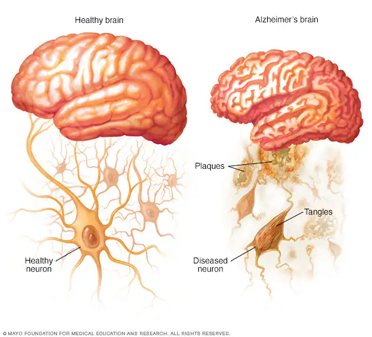

Tratamiento y Cuidados

Medicamentos para los Síntomas
Existen fármacos diseñados para mejorar la comunicación entre las neuronas y aliviar síntomas cognitivos y conductuales:
- Inhibidores de la colinesterasa: (Donepezilo, Galantamina, Rivastigmina). Ayudan con la memoria y el ánimo. Pueden causar náuseas o pérdida de apetito.
- Memantina (Namenda): Se usa en etapas moderadas a graves para retrasar la progresión de los síntomas.
Nuevas Terapias (Inmunoterapia)
Medicamentos recientes aprobados por la FDA que buscan reducir las placas amiloides en etapas tempranas:
- Lecanemab (Leqembi) y Donanemab (Kisunla): Se administran vía intravenosa.
- Importante: Requieren monitoreo constante con resonancias magnéticas debido al riesgo de efectos secundarios graves como hinchazón o sangrado cerebral.
Creación de un Entorno Seguro
Adaptar el hogar y las rutinas es fundamental para la calidad de vida del paciente:
- Organización: Guardar objetos de valor (llaves, móvil) siempre en el mismo sitio y usar pizarras para tareas diarias.
- Seguridad física: Instalar barandillas, quitar alfombras innecesarias y mejorar la iluminación.
- Apoyo visual: Mantener fotos familiares y objetos significativos, pero reducir la cantidad de espejos si causan confusión.
- Identificación: Uso de brazaletes de alerta médica y sistemas de localización GPS en el teléfono.
Salud Mental y Bienestar
En algunos casos, los médicos pueden recetar antidepresivos para manejar la agitación o la ansiedad, siempre bajo supervisión profesional.
Finalizar Recorrido
Has completado la información básica sobre el Alzheimer. Puedes volver al inicio o revisar las fuentes.